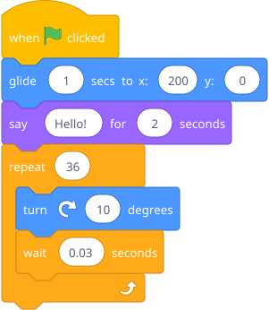
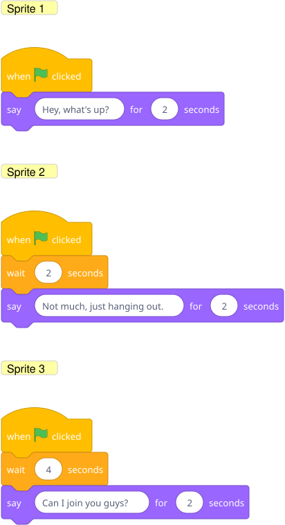

Away from the computer: you are a robot. He writes instructions on index cards (one step per card) to make you walk to the fridge and get a snack. You follow them literally. If he says "open the fridge" before "walk to the fridge," you mime opening an invisible fridge where you stand. This gets funny fast, and the lesson — order matters, computers are literal — lands through laughter.
Then on Scratch: give him a sprite and a goal — "make the cat walk to the edge, say 'hello!', then do a flip."
Build this ahead of time and let him run it, then take it apart:

Blocks to point out: The glide block is under Motion (it moves smoothly instead of teleporting). say is under Looks. repeat and wait are under Control — the wait inside the repeat is what makes the flip visible instead of instant.
Make a 3-sprite skit where characters take turns talking. This naturally introduces the idea that timing/sequencing gets harder with multiple actors — setting up Unit 5's broadcasting.
Hint — blocks he'll need:

The key insight: each sprite has its own script that starts at the same time (green flag), so he needs wait blocks to stagger the dialogue. If the timing is off, they'll talk over each other — which is a useful thing to let happen so he can debug it.